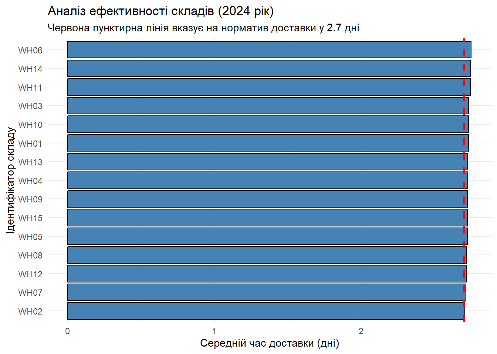

library(data.table)
library(ggplot2)Лабораторна робота №6: Ефективна робота з великими даними за допомогою пакета data.table
Інженерія даних | КрНУ ім. М. Остроградського
Мета роботи
Освоїти сучасний інструмент для роботи з великими обсягами даних у R — пакет data.table. Навчитися виконувати швидкі, пам’ять-ефективні операції над сотнями тисяч і мільйонами рядків: фільтрацію, агрегацію, оновлення (by reference) та злиття таблиць за допомогою унікального синтаксису DT[i, j, by].
Вступ
У світі інженерії даних часто доводиться працювати з обсягами інформації, які перевантажують оперативну пам’ять. У таких умовах стандартні пакети стають ресурсоємними. data.table пропонує оптимізовану C-реалізацію, що дозволяє обробляти дані в десятки разів швидше, мінімізуючи створення проміжних копій у пам’яті.
У даній роботі реалізується високоефективний аналіз логістичної мережі за 2024 рік. Всі операції виконуються виключно синтаксисом data.table.
Хід виконання
Етап 1: Завантаження даних
На першому етапі завантажимо вихідні дані з робочої директорії. Для роботи з великими обсягами інформації замість стандартних функцій R використаємо оптимізовану функцію fread(). Вона автоматично конвертує дані у формат data.table. Переконаємося у правильності форматів та виведемо перші рядки для ознайомлення.
logistics <- fread("logistics_2024.csv")
warehouses <- fread("warehouses.csv")
cat("Клас логістичних даних:", class(logistics)[1], "\n")Клас логістичних даних: data.table cat("Клас довідника складів:", class(warehouses)[1], "\n\n")Клас довідника складів: data.table head(logistics, 5) delivery_id warehouse_id customer_id dispatch_date delivery_date distance_km
<int> <char> <char> <IDat> <IDat> <int>
1: 100001 WH03 CUST-8842 2024-01-05 2024-01-08 420
2: 100002 WH01 CUST-1293 2024-01-05 2024-01-06 85
3: 100003 WH02 CUST-5510 2024-01-06 2024-01-12 1200
4: 100004 WH07 CUST-4926 2024-09-27 2024-09-29 694
5: 100005 WH04 CUST-4448 2024-05-07 2024-05-09 1229Етап 2: Підготовка та очистка даних
На наступному етапі проведемо очистку даних. Спочатку розрахуємо фактичний час доставки у днях як різницю між датою доставки та датою відправлення. Усі модифікації будемо виконувати “на місці” (by reference) за допомогою оператора :=, щоб уникнути зайвого копіювання таблиці в оперативній пам’яті. Також обробимо аномальні (від’ємні) значення і видалимо непотрібний стовпець customer_id.
logistics[, delivery_time := as.integer(as.IDate(delivery_date) - as.IDate(dispatch_date))]
logistics[delivery_time < 0, delivery_time := NA_integer_]
logistics[, customer_id := NULL]
str(logistics)Classes 'data.table' and 'data.frame': 600000 obs. of 6 variables:
$ delivery_id : int 100001 100002 100003 100004 100005 100006 100007 100008 100009 100010 ...
$ warehouse_id : chr "WH03" "WH01" "WH02" "WH07" ...
$ dispatch_date: IDate, format: "2024-01-05" "2024-01-05" ...
$ delivery_date: IDate, format: "2024-01-08" "2024-01-06" ...
$ distance_km : int 420 85 1200 694 1229 998 597 1041 1333 930 ...
$ delivery_time: int 3 1 6 2 2 4 0 4 6 3 ...
- attr(*, ".internal.selfref")=<pointer: 0x000001dd27a29f00> Етап 3: Агрегація за складами та типами
Далі виконаємо злиття таблиці транзакцій із довідником складів за ключовим полем warehouse_id. Після об’єднання розрахуємо ключові показники ефективності для кожного складу: середній час доставки, загальну кількість доставок та відсоток доставок, що зайняли більше 5 днів.
merged_data <- logistics[warehouses, on = "warehouse_id", nomatch = 0]
wh_performance <- merged_data[, .(
mean_delivery_time = mean(delivery_time, na.rm = TRUE),
total_deliveries = .N,
late_prop = mean(delivery_time > 5, na.rm = TRUE)
), by = warehouse_id]
wh_performance <- wh_performance[order(-mean_delivery_time)]
print(wh_performance) warehouse_id mean_delivery_time total_deliveries late_prop
<char> <num> <int> <num>
1: WH06 2.748016 40093 0.09229917
2: WH14 2.744179 39637 0.09275488
3: WH11 2.742852 39854 0.09368346
4: WH03 2.730141 40057 0.09087702
5: WH10 2.729185 40067 0.09123011
6: WH01 2.728436 40092 0.09079000
7: WH13 2.724512 40198 0.09061424
8: WH04 2.724287 39916 0.09160885
9: WH09 2.721551 39785 0.09149713
10: WH15 2.721342 39908 0.09108861
11: WH05 2.720987 40289 0.09091593
12: WH08 2.716621 39969 0.08986181
13: WH12 2.714904 39923 0.08997039
14: WH07 2.710816 40134 0.08915402
15: WH02 2.703465 40078 0.08846193Етап 4: Аналіз за місяцями та типами складів
Для дослідження динаміки навантаження на логістичну мережу створимо новий стовпець month. Після цього за допомогою спеціального символу .SD та аргументу .SDcols підрахуємо кількість операцій у розрізі місяців та типів складів.
merged_data[, month := format(as.IDate(dispatch_date), "%Y-%m")]
monthly_analysis <- merged_data[, lapply(.SD, length),
by = .(warehouse_type, month),
.SDcols = "delivery_id"]
setnames(monthly_analysis, "delivery_id", "delivery_count")
monthly_analysis <- monthly_analysis[order(month, warehouse_type)]
head(monthly_analysis, 10) warehouse_type month delivery_count
<char> <char> <int>
1: automated 2024-01 17168
2: manual 2024-01 16962
3: semi-automated 2024-01 16877
4: automated 2024-02 15953
5: manual 2024-02 15806
6: semi-automated 2024-02 15905
7: automated 2024-03 16990
8: manual 2024-03 16962
9: semi-automated 2024-03 17001
10: automated 2024-04 16356Етап 5: Виявлення найменш ефективних вузлів
З метою виявлення критичних місць мережі знайдемо склади, які систематично не вкладаються в нормативи. Критеріями неефективності є середній час доставки більше 2.7 днів та суттєве навантаження (понад 1000 доставок). Для інформативності підтягнемо назви міст розташування цих складів.
bad_warehouses <- wh_performance[mean_delivery_time > 2.7 & total_deliveries >= 1000]
worst_hubs <- bad_warehouses[warehouses, on = "warehouse_id", nomatch = NULL][
, .(warehouse_id, city, warehouse_type, mean_delivery_time, total_deliveries)
]
worst_hubs <- head(worst_hubs[order(-mean_delivery_time)], 10)
print(worst_hubs) warehouse_id city warehouse_type mean_delivery_time total_deliveries
<char> <char> <char> <num> <int>
1: WH06 Київ semi-automated 2.748016 40093
2: WH14 Дніпро manual 2.744179 39637
3: WH11 Київ semi-automated 2.742852 39854
4: WH03 Одеса semi-automated 2.730141 40057
5: WH10 Харків automated 2.729185 40067
6: WH01 Київ automated 2.728436 40092
7: WH13 Одеса automated 2.724512 40198
8: WH04 Дніпро automated 2.724287 39916
9: WH09 Дніпро semi-automated 2.721551 39785
10: WH15 Харків semi-automated 2.721342 39908Етап 6: Візуалізація результатів
На завершення роботи побудуємо стовпчасту діаграму, щоб наочно порівняти середній час виконання замовлень між різними складами. Для сумісності з бібліотекою ggplot2 перетворимо таблицю data.table у звичайний формат data.frame.
# Перетворення об'єкта у data.frame
wh_performance_df <- setDF(copy(wh_performance))
# Візуалізація
ggplot(wh_performance_df, aes(x = reorder(warehouse_id, mean_delivery_time), y = mean_delivery_time)) +
geom_bar(stat = "identity", fill = "steelblue", color = "black") +
coord_flip() +
geom_hline(yintercept = 2.7, linetype = "dashed", color = "red", size = 1) +
labs(
title = "Аналіз ефективності складів (2024 рік)",
subtitle = "Червона пунктирна лінія вказує на норматив доставки у 2.7 дні",
x = "Ідентифікатор складу",
y = "Середній час доставки (дні)"
) +
theme_minimal()
Висновок
У ході виконання лабораторної роботи було практично освоєно синтаксис пакета data.table. Завдяки використанню оптимізованих функцій злиття, агрегації та оновлення даних “на місці” (by reference), вдалося ефективно обробити масив даних обсягом понад 600 000 рядків. Виконаний аналіз дозволив виявити проблемні вузли в логістичній мережі, що потребують оптимізації процесів доставки.